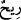

Salıvermek anlamına gelen “, “imsâk”ın zıddıdır. “ hareketli hava
mânâsında “ kelimesinin çoğuludur. Aslı “ kelimesidir. Bundan dolayı “
diye çoğul yapılır. “ kelimesine kıyas yapılarak “ denilmesi doğru değildir.
Keşfü’l-esrâr sâhibi der ki: “Kendi takdir ve tedbiri ile muhtelif yerlerden farklı
rüzgârları zamanında ve ölçüsünde gönderir.” Allah Teâlâ buradaki rüzgârlardan güney,
kuzey ve sabâ rüzgârlarını murâd etmektedir. Zira bunlar rahmet rüzgârlarıdır. “Debûr”
isimli batı rüzgârını murad etmemiştir. Çünkü o, azap rüzgârıdır. Güney rüzgarı, kuzey
rüzgârına muhâliftir. Güney rüzgarı Süheyl yıldızının doğusundan (matlaından) Süreyya
yıldızının doğusuna (matlaına) doğru eser. Şemal, yahut Şimal denilen kuzey rüzgarı ise
güneşin doğuşu ile büyük yahut küçük Ayı’nın doğuşu arasından eser. Yahut güneşin
doğuşundan kuzey kutbundaki Vega yıldızının düştüğü yere doğru gece eser. Sabâ
rüzgarı ise gece ve gündüz eşitlendiği zaman doğu tarafından eser. Nefisler bu rüzgara
meylettiği için sapmak, meyletmek mânâsında bu rüzgara “Saba” ismi verilmiştir. Bu
rüzgara “kabûl” de denilir. Zira Sabâ rüzgarı Debûr denilen batı rüzgarına yahut
Kâbe’nin kapısına tekâbul eder. Yahut nefis, bu rüzgarı kabul ettiği için buna “kabûl
rüzgârı” da denilmiştir. Rüzgar, yağmur inmesi için yerle gök arasındaki bulutları
savurup dağıtır.
Tâcü’l-masâdir’de der ki: “ (İsâre), harekete geçirme, yeri coşturma ve rüzgârın
bulut getirmesi gibi anlamlara gelir. “ yâni bulut kelimesi, Allah Teâlâ’nın
dilediği gibi su doldurduğu bir cisimdir. Denilir ki bulut, denizlerden ve yerden
yükselip dağları saran bir buhardır. Dağlarda soğuk hava tabakasıyla temas edip yağmur
olarak yere iner. “ kelimesinin asıl mânâsı eteği ve insanı yüzüstü çekmektir.
Bulut da suyu çektiği için bu mânâ da ona da “ denilmiştir.
Âyette “ (gönderdi)” ve “ (sevk ettik)” filleri mâzî/geçmiş zaman olduğu halde
“ (harekete geçirir)” fiilinin muzârî/geniş zaman getirilmesi, kudretin ve hikmetin
kemâline delâlet eden bu eşsiz sûreti/manzarayı zihinde hazır etmek üzere geçmiş
durumu hikâye edip anlatmak içindir.
“Biz onu ölü bir bölgeye göndeririz de ölümünden,” kurumasından “sonra toprağa
onunla” yâni buluttan inen yağmurla “hayat veririz.” Yeryüzünü bitkilerle yemyeşil
hale getiririz.
“Sevk”; sürmek, yürütmek ve kovmak anlamlarına gelir. “Beled” ise mukim olanların
bir arada toplanıp ikamet ettikleri ve bayındır hâle getirdikleri sınırları tespit edilmiş
yerdir. Ölü beled-bölge, bitkisi olmayıp kıtlıktan toz-duman olan yerdir. Râğıb der ki:
“Mevt (ölüm) bitkilerde mevcut gelişim kuvvetinin karşısında kullanılır. Yâni Allah
Teâlâ o bulutu sevk edip onu suya muhtaç olan araziye icrâ edip akıtmaktadır. Yine
burada “o bulutu biz sevk ettik” buyurmakla Allah Teâlâ’nın gâib sîgasından mütekellim
sıgasına geçmesi, özellikle bu işin Allah Teâlâ hazretlerine mahsus olduğunu ifâde
etmek içindir. Her şey Allah’tandır; vâsıtalar sâdece sebeplerden ibârettir.